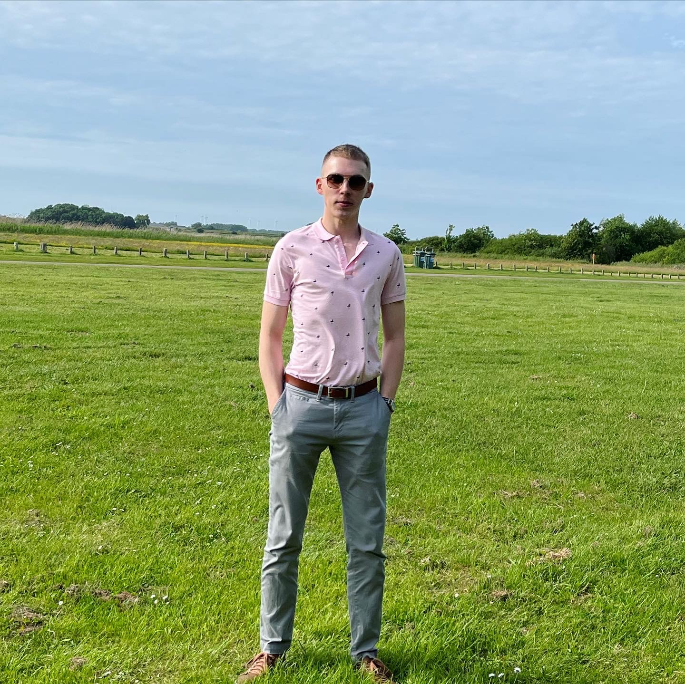

My profile
Personal Information
Hi, I'm Michal Jakubowski, a 21 year old guy from Poland. I grew up in the small town of Jaworzno. After living there for 11 years, my parents decided it would be better to move to the Netherlands. We first visited a family member in Vlissingen in 2010 and have been living here since 2011. I can still speak fluent Polish, however it is getting a little less natural with each year. Beside that i also speak Dutch and English, with the hope to improve the latter in the upcoming years. I also have a young dog named Esco, short for Escobar.
Extra-curricular activities
My hobby's are pretty much all over the place. I love gaming, but i also really enjoy working out or going for a run. I've also been trying to get back into reading, I used to enjoy it when younger, especially in the evenings. I do also spend a lot of time with my dog, Esco, whether it's in the park, at the beach or in the garden.
My characteristics
Positive
- Creative
- Outside the box thinking
- Adaptable
- Persistent
Negative
- Picky
- Rigid
- Pessimistic